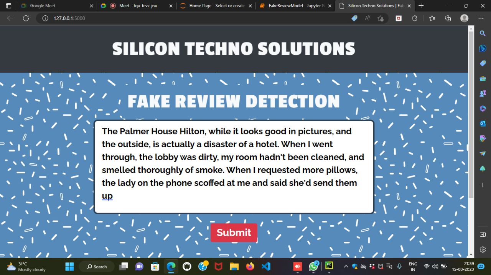

PROJECT_DETAILS
A Supervised Machine Learning Apporach To Detect Fake Online Reviews
Increasing use of internet, online business platforms are becoming of the largest market place of-
the world . Purchase of online product is heavily dependent on user reviews . Some dishonest the
groups of people misuse this fact by posting onfake reviews to promote their own products or demote
their competitor.Detection of fake online reviews can be considered as binary classification task
that models a classifier to tell whether a review is fake or true.In this paper, we have developed
an effective supervised machine learning approach to classify fake online reviews using a dataset
that contains hotel reviews from online websites . . .
RESULTS
